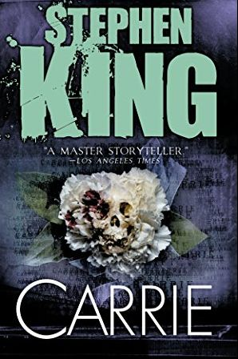

The Call of the Wild is a short adventure novel by Jack London, published in 1903 and set in Yukon, Canada, during the 1890s Klondike Gold Rush, when strong sled dogs were in high demand. The central character of the novel is a dog named Buck. The story opens at a ranch in Santa Clara Valley, California, when Buck is stolen from his home and sold into service as a sled dog in Alaska. He becomes progressively feral in the harsh environment, where he is forced to fight to survive and dominate other dogs. By the end, he sheds the veneer of civilization, and relies on primordial instinct and learned experience to emerge as a leader in the wild. London spent almost a year in the Yukon, and his observations form much of the material for the book. The story was serialized in The Saturday Evening Post in the summer of 1903 and was published later that year in book form. The book's great popularity and success made a reputation for London. As early as 1923, the story was adapted to book, and it has since seen several more cinematic adaptations.
The Call of the Wild was enormously popular from the moment it was published. H. L. Menken wrote of London's story: "No other popular writer of his time did any better writing than you will find in The Call of the Wild." A reviewer for The New York Times wrote of it in 1903: "If nothing else makes Mr. London's book popular, it ought to be rendered so by the complete way in which it will satisfy the love of dog fights apparently inherent in every man." The reviewer for The Atlantic Monthly wrote that it was a book: "untouched by bookishness...The making and the achievement of such a hero [Buck] constitute, not a pretty story at all, but a very powerful one."
Author
Illustrator
Cover artist
Jack London
phlip R. Goodwin and Charles Livingston Bull
Charles Edward Hooper
The Three Musketeers
The young boy, d'Artagnan witnesses the murder of his parents at the hands of Febre (Tim Roth), chief henchman of Cardinal Richelieu (Stephen Rea). d'Artagnan is nearly killed after using his dead father's sword to fight Febre, who is then left with a permanent scar and blind in one eye. d'Artagnan is taken in by family friend Planchet (Jean-Pierre Castaldi), a former musketeer, one of the loyal protectors of King Louis XIII (Daniel Mesguich).
Fourteen years later the grown d'Artagnan (Justin Chambers) finds on his arrival in Paris that the musketeers have been disbanded by order of Cardinal Richelieu, who is usurping the king's authority with the help of Febre. Richelieu is also trying to foment hostility between France, England, and Spain to gain more political power for himself. d'Artagnan convinces two of the musketeers, Porthos (Steve Speirs) and Aramis (Nick Moran), to free the imprisoned head of the musketeers, Treville (Michael Byrne), thus earning their trust. He takes a room at a Paris boarding house, where he takes a fancy to the chambermaid, Francesca (Mena Suvari), who is the daughter of the deceased seamstress to the Queen. Febre, on orders from Richelieu, incites a mob to attack the French Royal Palace during a State dinner for Lord Buckingham (Jeremy Clyde), a visiting English dignitary. d'Artagnan, with the help of Porthos, Aramis, and another musketeer, Athos (Jan Gregor Kremp), saves King Louis, the Queen (Catherine Deneuve), and Lord Buckingham from being hurt or killed. Francesca recruits d'Artagnan to make a clandestine trip to the north coast of France with the Queen to meet with Buckingham in whose honor the State Dinner was being held, to keep peace between the two countries. d'Artagnan's landlord, however, overhears them and tells Febre.
Written by
company
Distributed by
Gene
Crystal Sky Worldwide
universal pictures
Read more about classics Books
To Kill a Mockingbird
To Kill a Mockingbird is a novel by Harper Lee published in 1960. Instantly successful, widely read in high schools and middle schools in the United States, it has become a classic of modern American literature, winning the Pulitzer Prize. The plot and characters are loosely based on Lee's observations of her family, her neighbors and an event that occurred near her hometown of Monroeville, Alabama, in 1936, when she was ten.
Despite dealing with the serious issues of rape and racial inequality, the novel is renowned for its warmth and humor. Atticus Finch, the narrator's father, has served as a moral hero for many readers and as a model of integrity for lawyers. The historian J. Crespino explains, "In the twentieth century, To Kill a Mockingbird is probably the most widely read book dealing with race in America, and its main character, Atticus Finch, the most enduring fictional image of racial heroism."[1]
Author
Country
Language
Harper Lee
United States
English
Little woman
I used to want to save the world. This beautiful place. But I knew so little then. It is a land of magic and wonder. Worth cherishing in every way. But the closer you get, the more you see the great darkness shimmering within. And mankind? Mankind is another story altogether. What one does when faced with the truth, is more difficult than you think. I learned this the hard way. A long long time ago. And now, I will never be the same.
What one does when faced with the truth is more difficult than you think.
I will fight – for those who cannot fight for themselves.
You're wrong about them. They're everything you say... but so much more.
It's not about "deserve". It's about what you believe. And I believe in Love.
I used to want to save the world. To end war and bring peace to mankind; but then I glimpsed the darkness that lives within their light. I learnt that inside every one of them there will always be both. The choice each must make for themselves – something no hero will ever defeat. And now I know... that only Love can truly save the world. So now I stay, I fight, and I give – for the world I know can be. This is my mission now. Forever
Publisher
Date
Writers
DC comics
1984–1985
Alan moore
Read more about Comic Books
Watchmen
Watchmen is an American comic book maxiseries by the British creative team of writer Alan Moore, artist Dave Gibbons and colorist John Higgins. It was published by DC Comics in 1986 and 1987, and collected in a single volume edition in 1987. Watchmen originated from a story proposal Moore submitted to DC featuring superhero characters that the company had acquired from Charlton Comics. As Moore's proposed story would have left many of the characters unusable for future stories, managing editor Dick Giordano convinced Moore to create original characters instead.
Moore used the story as a means to reflect contemporary anxieties and to deconstruct and satirize the superhero concept. Watchmen depicts an alternate history in which superheroes emerged in the 1940s and 1960s and their presence changed history so that the United States won the Vietnam War and the Watergate break-in was never exposed. In 1985, the country is edging toward World War III with the Soviet Union, freelance costumed vigilantes have been outlawed and most former superheroes are in retirement or working for the government. The story focuses on the personal development and moral struggles of the protagonists as an investigation into the murder of a government-sponsored superhero pulls them out of retirement.
Date
Publisher
Writers
1986–1987
DC comics
Alan moore
The Walking Dead: Compendium One
The Walking Dead is an American post-apocalyptic comic book series created by writer Robert Kirkman and artist Tony Moore – who was the artist on the first 6 issues and cover artist for the first 24 – with art on the remainder of the series by Charlie Adlard.It focuses on Rick Grimes, a Kentucky deputy who is shot in the line of duty and awakens from a coma in a zombie apocalypse that has resulted in a state-wide quarantine. After joining with some other survivors, he gradually takes on the role of leader of a community as it struggles to survive the zombie apocalypse. Published beginning in 2003 by Image Comics, the series ran for 193 issues, with Kirkman unexpectedly ending the series in 2019.
The Walking Dead received the 2007 and 2010 Eisner Award for Best Continuing Series at San Diego Comic-Con International. The series was adapted into the AMC television series The Walking Dead, which premiered in 2010. The television program loosely follows the storyline of the comic book. The franchise has also spawned multiple additional media properties, including video games (such as The Walking Dead video game), a companion television series (Fear the Walking Dead), webisode series (The Walking Dead: Torn Apart, The Walking Dead: Cold Storage, The Walking Dead: The Oath, and The Walking Dead: Red Machete), and various additional publications, including novels (The Walking Dead: Rise of the Governor).
Publisher
Schedule
Format
Image Comics
Monthly
Ongoing serires
Read more about Detective Books
A Study in Scarlet
A Study in Scarlet is an 1887 detective novel by British author Arthur Conan Doyle. Written in 1886, the story marks the first appearance of Sherlock Holmes and Dr. Watson, who would become the most famous detective duo in popular fiction. The book's title derives from a speech given by Holmes, a consulting detective, to his friend and chronicler Watson on the nature of his work, in which he describes the story's murder investigation as his "study in scarlet": "There's the scarlet thread of murder running through the colourless skein of life, and our duty is to unravel it, and isolate it, and expose every inch of it."
Author
Country
Series
Arthur Conan Doyle
United Kingdom
sherlock Holmes
The Adventures of Sherlock Holmes
The Adventures of Sherlock Holmes is a collection of twelve short stories by Arthur Conan Doyle, first published on 14 October 1892. It contains the earliest short stories featuring the consulting detective Sherlock Holmes, which had been published in twelve monthly issues of The Strand Magazine from July 1891 to June 1892. The stories are collected in the same sequence, which is not supported by any fictional chronology. The only characters common to all twelve are Holmes and Dr. Watson and all are related in first-person narrative from Watson's point of view.
In general the stories in The Adventures of Sherlock Holmes identify, and try to correct, social injustices. Holmes is portrayed as offering a new, fairer sense of justice. The stories were well received, and boosted the subscriptions figures of The Strand Magazine, prompting Doyle to be able to demand more money for his next set of stories. The first story, "A Scandal in Bohemia", includes the character of Irene Adler, who, despite being featured only within this one story by Doyle, is a prominent character in modern Sherlock Holmes adaptations, generally as a love interest for Holmes. Doyle included four of the twelve stories from this collection in his twelve favourite Sherlock Holmes stories, picking "The Adventure of the Speckled Band" as his overall favourite.
Author
Illustrator
Country
Arthur Conan Doyle
Sidney Paget
United Kingdom
Read more about Fantasy Books
The Water Dancer
The Water Dancer is a 2019 novel by Ta-Nehisi Coates. It is his first novel and was published on September 24, 2019, by One World, an imprint of Random House. It is a surrealist story set in the pre–Civil War South, concerning a superhuman protagonist named Hiram Walker who possesses photographic memory, but who cannot remember his mother, and is able to transport people over long distances by using a power known as "conduction" which can fold the Earth like fabric and allows him to travel across large areas via waterways.
Author
Cover artist
Country
Ta-Nehisi Coates
Calida Garcia Rawles
United States
Circe
Circe is a enchantress in Greek mythology. She is a daughter of the god Helios and either the Oceanid nymph Perse or the goddess Hecate. Circe was renowned for her vast knowledge of potions and herbs; one of her Homeric epithets is polypharmakos ("knowing many drugs or charms"). Through the use of these and a magic wand or staff, she would transform her enemies, or those who offended her, into animals.
Abode
Parents
Siblings
Aeasea
Helios
Perses
Read more about Historical Fiction Books
The Help
The Help is a 2009 novel by American author Kathryn Stockett. The story is about African Americans working in white households in Jackson, Mississippi, during the early 1960s.
A USA Today article called it one of the "summer sleeper hits".[1] An early review in The New York Times notes Stockett's "affection and intimacy buried beneath even the most seemingly impersonal household connections" and says the book is a "button-pushing, soon to be wildly popular novel".[2] The Atlanta Journal-Constitution said of the book: "This heartbreaking story is a stunning début from a gifted talent."[3]
Stockett began writing the novel — her first — after the September 11th attacks.[4] It took her five years to complete and was rejected by 60 literary agents, over a period of three years,[5] before agent Susan Ramer agreed to represent Stockett.[6][7] The Help has since been published in 35 countries and three languages.[8] As of August 2011, it had sold seven million copies in print and audiobook editions,[9] and spent more than 100 weeks on The New York Times Best Seller list.
Author
Country
Language
Kathryn Stockstt
United States
English
One Hundred Years of Solitude
One Hundred Years of Solitude (Spanish: Cien años de soledad, American Spanish: [sjen ˈaɲos ðe soleˈðað]) is a landmark 1967 novel by Colombian author Gabriel García Márquez that tells the multi-generational story of the Buendía family, whose patriarch, José Arcadio Buendía, founded the town of Macondo, a fictitious town in the country of Colombia.
The magical realist style and thematic substance of One Hundred Years of Solitude established it as an important representative novel of the literary Latin American Boom of the 1960s and 1970s,[1] which was stylistically influenced by Modernism (European and North American) and the Cuban Vanguardia (Avant-Garde) literary movement.
Original title
Country
Language
Cien años de soledad
Argentina
Spanish
Read more about Horror Books
Carrie

Carrie is an epistolary horror novel by American author Stephen King. It was his first published novel, released on April 5, 1974, with a first print-run of 30,000 copies.[1] Set primarily in the future year of 1979, it revolves around the eponymous Carrie White, an unpopular friendless misfit and bullied high-school girl from an abusive religious household who uses her newly discovered telekinetic powers to exact revenge on those who torment her. During the process, she causes one of the worst local disasters the town has ever had. King has commented that he finds the work to be "raw" and "with a surprising power to hurt and horrify." It is one of the most frequently banned books in United States schools.[2] Much of the book uses newspaper clippings, magazine articles, letters, and excerpts from books to tell how Carrie destroyed the fictional town of Chamberlain, Maine while exacting revenge on her sadistic classmates and her own mother Margaret.
Edited by
Production company
Release date
Paul Hersch
Red Bank Films
November 3, 1976
The Haunting of Hill House
The Haunting of Hill House is a 1959 gothic horror novel by American author Shirley Jackson. A finalist for the National Book Award and considered one of the best literary ghost stories published during the 20th century,[1] it has been made into two feature films and a play, and is the basis of a Netflix series. Jackson's novel relies on terror rather than horror to elicit emotion in the reader, using complex relationships between the mysterious events in the house and the characters’ psyches.